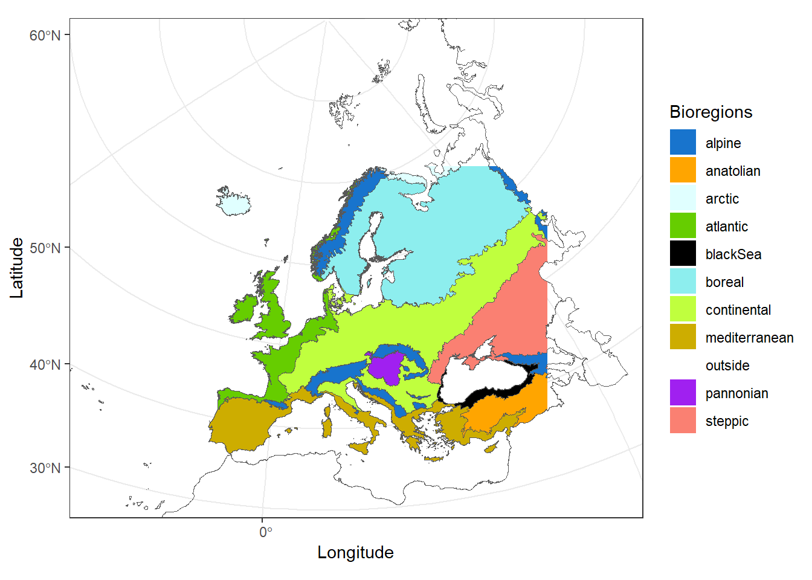
Occupancy Trends of European Pollinators
Ignasi Bartomeus ![]()
François Duchenne
Carlos Martinez Nuñez
Abstract
This document present the dataset, methods and results of the SAFEGUARD project that aims to assess pollinator temporal trends at European level. First, we present the dataset and the associated challenges to succeed to unravel the population trends of european pollinators from opportunistic data that have not been collected for that. Second, we present how we used occupancy models to overcome possible bias. Third, we present the preliminary results of these model, showing the occupancy trends for ~480 species and comparing the 5 major biogeographic regions of Europe.
1 Dataset
The dataset is essentially composed from the database assembled by Natasha de Manincor et al. completed by a more recent version of the Iberian dataset (Bartomeus comm. pers.) and recently available dataset of bee occurrences from Portugal (https://doi.org/10.15468/2e4rap).
The merged dataset contains 4,921,255 records of pollinator occurrences between 1921 and 2020, within the region symbolized by the colored region in Figure 1.
We focused on the 5 biogeographic regions gathering most of the occurrence records, removing 93,254 records, leading to a dataset of 4,828,001 pollinator occurrences.
2 Methods to estimate occupancy trends
2.1 Inference of non-detection events
Because opportunistic data are composed only from presence data, we need to infer pseudo-absences, or non-detection events, to inform statistical models about potential absences. To do so, we need to define sites and survey events. Site were defined as grid cells, data being aggregated spatially using the hexagonal grid cells of side of 50km, which leads to grid cells of 6495km2. In a given site, records were grouped in survey events, by year and month. We defined a species’ detections in survey as the collection of the observed species at this location and during that survey. Conversely, we defined non-detections for a species if it was not observed at a given site during a given survey. This led to the exclusion of all records without information of the month of the collect (n = 1,919,779). We also removed the sites that had been surveyed only in one year (n = 325), because they do not bring temporal information, and their removal have been shown to improve modelling performance (Isaac et al. 2014). This led to 133,413 survey across the study area, between 1921 and 2020 (Figure 2).
This dataset is bias toward western Europe, Belgium and Soutern UK being the region with the better temporal coverage (Figure 2).
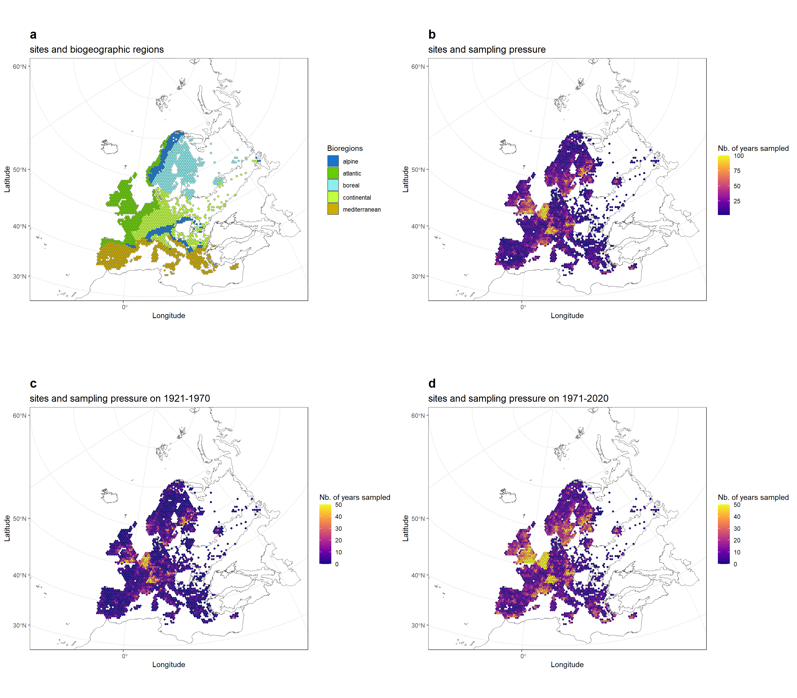
The dataset is also strongly temporally biased, with a sampling pressure that increased a lot over time, in terms of number of records, sites sampled and number of survey per sampled site (Figure 3).

2.2 Statistical model
The corrections of these bias require the use of statistical models that distinguish the observation processes and the population states. To do so we used occupancy models, which have been shown as one of the most powerful methods to estimate population trends from opportunistic data (Isaac et al. 2014; Outhwaite et al. 2019; Shirey et al. 2023). This method accounts for temporal variation in detection probability, thereby considering changes over time in the species targeted by collectors. Temporal variation in occupancy measured at broad spatial scale is considered as a proxy of population trend, due to the close relationship between abundance and occupancy (He and Gaston 2003).
To see how model formulation could affect our results, we run two different models: one modelling linear temporal changes in occupancy and another one modelling non-linear temporal changes in occupancy. Linear trends are convenient because they allow to resume in one coefficient (the slope) if the direction and the magnitude of the population trend. However, summarizing non-linear variation to a linear trends can lead to biased trends (Duchenne et al. 2022), which thus require to assess the linearity of the studied temporal changes to draw relevant conclusions.
2.2.1 Linear temporal changes in occupancy
The model was fitted independently for each species, and described by the following set of equations:
State model:
\[ z_{rij} \sim Bernouilli(\Psi_{rij}); logit(\Psi_{rij})=\beta_0 + \tau_r \times year_j + \Theta_i \tag{1}\]
Observation model:
\[ \begin{align} y_{rijv} | z_{rij} &\sim Bernouilli(p_{rijv} \times z_{rij}); \\ logit(p_{rijv}) &=\beta_1 + \beta_2 \times sampling \space completeness_{ijv} + \Theta_{r,month_v}+ \Theta_{j} \end{align} \tag{2}\]
The state model describes the true (unknown) occupancy of the species (\(z_{rij}=0\), absent or \(z_{rij}=1\), present). \(\Psi_{rij}\) is the probability of occupancy in region r, grid cell i at year j. This probability is modeled using a logit link function, as a function of a global intercept \(\beta_0\), a fixed linear effect of the time for each region r (\(\tau_r\)) and a random site effect (\(\Theta_{i}\)).
The observation model describes detection/non-detection events in region r, grid cell i, time period j, and survey v (\(y_{rijv}\)), conditionally to the true occupancy state (\(z_{rij}\)). It models the detection status of the focal species (1 or 0) . \(p_{rijv}\) is the estimated detection probability, modelled as a function of an intercept \(\beta_1\), a fixed effect (\(\beta_2\)) of the sampling completeness.Our measure of sampling completeness was simply the logarithm of the number of species detected during survey v. This index was centered per region to remove the correlation with regional species richness. Because we log transformed the number of species detected, this effect captures whether during a survey, one, few or more species were detected, which mainly depends on the sampling pressure (Isaac et al. 2014).
Finally, to the observation model, we added a nested random effect of the month on of the survey v within the region r (\(\Theta_{r,month_v}\)) to model phenological variation in detection probability across months and regions, and a random effect of the year (\(\Theta_j\)) to absorb temporal variation in detection probability of the focal species.
When using a linear temporal trend and a logit function, it has been shown that the slope of that temporal trend (\(\theta_r\)) is the logarithm of the growth rate (\(\rho\)) (Duchenne et al. 2022). Thus \(\rho_r=e^{\theta_r}\), where \(\rho=1\) means a stale occupancy probability, \(\rho<1\) a decrease and \(\rho>1\) a temporal increase in occupancy probability. To get a more intuitive measure of growth rate, we decided to express this growth rate in \(\pm \%.year^{-1}\) we used: \(\rho_r=100 \times (e^{\theta_r}-1)\).
2.2.2 Non-linear temporal changes in occupancy
The non-linear model was exactly the same as the linear model presented in Equation 1 and Equation 2, excepting that we replaced the linear temporal trend for each region r (\(\tau_r\)) in Equation 1 by an autoregressive process of order 1 (AR1, \(\Theta_{rj}\)), leading to the following state model:
State model:
\[ z_{rij} \sim Bernouilli(\Psi_{rij}); logit(\Psi_{rij})=\beta_0 + \Theta_{rj} + \Theta_i \tag{3}\]
2.2.3 Model implementation
Considering the important size of our dataset, due to the broad spatio-temporal scales considered here, we decided to implement our model using the R package glmmTMB to take adavantage of the fast computation it offers, instead of heavier and slower bayesian implementations (Isaac et al. 2014). To do so, we implemented the state model in the zero inflation formula. For example for the linear model, it was coded as follow:
model=glmmTMB(Y~sampling_completeness+(1|year)+(1|region/month),ziformula=~year*region+(1|site),family=binomial,data=dat)We fitted this model for all species with at least 10 records in Europe, and that have been detected in at least 5 surveys in a given region. For each species, we removed the biogeographic regions in which the species has been detected in less than 5 surveys. This led to a list of 1,332 species, over the 1,745 species in the dataset.
Since optimization of the model was tricky, to maxmimize the chance of convergence, we tried 4 different solvers compatible with glmmTMB: nlimb, Nelder-Mead, BFGS and CG. We also tried two different covariance structures for the temporal autocorrelation in the non-linear occupancy model: AR1 and the Ornstein-Uhlenbeck. We run models in the order listed in the Table 1 and kept the first model that converged.
| solver | covariance structure | order of run |
|---|---|---|
| nlimb | AR1 | 1 |
| Nelder-Mead | AR1 | 2 |
| BFGS | AR1 | 3 |
| CG | AR1 | 4 |
| nlimb | Ornstein-Uhlenbeck | 5 |
| Nelder-Mead | Ornstein-Uhlenbeck | 6 |
| BFGS | Ornstein-Uhlenbeck | 7 |
| CG | Ornstein-Uhlenbeck | 8 |
2.3 Summarizing trends per region
To summarize results per region we study the proportion of species that exhibited a significantly (p-value < 0.05) positive temporal trend in occupancy, henceforth winners, and the proportion of species that exhibited a significantly negative temporal trend in occupancy, henceforth losers.
TO produce an average temporal trend in occupancy per region, while accounting for uncertainty of the associated trends, we used an approach developed for meta-analysis, in which the “true” trend of species s in region r (\(\tau_{rs}^*\)) is unknown. However, we have the estimated trend (\(\tau_{rs}\)), which is linked to the “true” trend as follow: \(\tau_{rs} \sim \mathcal{N}(\tau_{rs}^*,v_{rs})\), where \(v_{rs}\) is the sampling variance, equals to the squared of the standard error associated with the observed trend.
Then the linear model to summarize trends per region can be written as follow: \[ \tau_{rs}^* = \beta_{r} + \mu_{rs} + \epsilon_{rs} \tag{4}\]
where \(\beta_{r}\) is an intercept for each region (average trend per region). \(\mu_{rs} \sim \mathcal{N}(0,\sigma^2)\) where \(\sigma^2\) is the residual variance in the “true” trends, while \(\epsilon_{rs} \sim \mathcal{N}(0,v_{rs})\) describes the residual variation due to the error in the trend estimation.
We used the metafor R package to implement this model.
3 Results
3.1 Species with convergence problems
For 854 species, occupancy trends could not be estimated properly because the model did not converge, regardless the algorithm used to optimize the model (“nlimb”, “Nelder-Mead”, “BFGS” or “CG”). Most often these convergence problems are due to positive values in the Hessian Matrix, likely due to a flat likelihood profile. This means that a broad diversity of parameter combination are consistent with the observations, and thus that the data do not contain enough information to infer spatio-temporal patterns of occupancy in a reliable way. These problems of convergence tended to occur slightly more often when the species was detected in very few surveys (i.e. rare species, Figure 4). This is a bias that our study, and other similar studies have faced (Duchenne et al. 2020; Powney et al. 2019): we do not have enough historical data to model occupancy trends of the species that became rare or extinct before recent times. Thus our occupancy trends do not include these strong historical declines that are likely an important components when estimating the effect of past global change on biodiversity. This is a source of under-estimation of effects of global change on biodiversity that is important to keep in mind.
These problems of convergence might be possible to solve in the future, by subsampling the dataset to focus on the core of the species area only, but it is for now a work in progress. It would also make the comparison across species slightly more difficult.
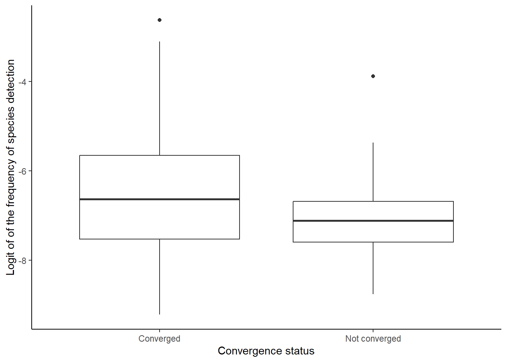
3.2 Linear occupancy trends
We were able to estimate the occupancy trends for 478 species, for a total number of 1493 population trends, for each possible species-region combinations. Among those combinations, 4 population trends were excluded from the dataset because they presented extreme values (positive or negative,\(|\tau_r|>1\)) that are likely to be erroneous trends.
The occupancy trends estimated for the remaining 1489 combination of species and biogeographic regions show a mixture of winners (species significantly increasing in occupancy, 27.94%) and losers (species significantly decreasing in occupancy, 25.25%) of the past global change (Figure 5).
The distribution of occupancy trends tended to be skewed on the right, with few very positive occupancy trends, suggesting the colonization of new area by some species, which is a typical signature of global change-driven changes.
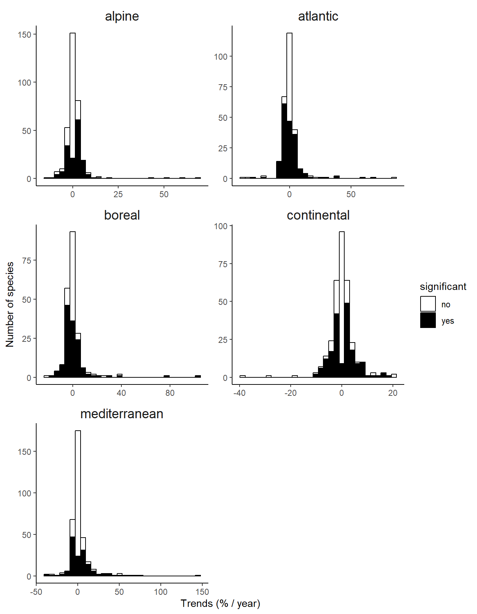
Summarizing the occupancy trends per region, we observe an average decline only in the Atlantic bio-geographic region (Figure 6). It is however important to note the strong uncertainty around these average values, due to the heterogeneity in occupancy trends across species.
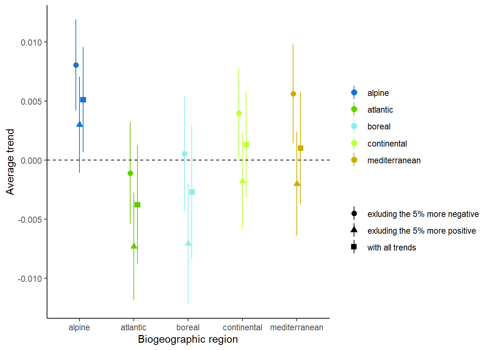
Moreover, although most of the region exhibit a positive average occupancy trend, this positive trend is driven by the right-skewness of the distribution (Figure 5). When looking at the proportion of losers and winners per region, losers are often as common as winners (Table 2). The only exception is the alpine biogeographic region, in which winners are strongly over-represented. This is consistent with the expectations under a climate warming scenario (Pradervand et al. 2014).
| Region | Proportion of losers | Proportion of winners |
|---|---|---|
| alpine | 0.15 | 0.31 |
| atlantic | 0.39 | 0.28 |
| boreal | 0.33 | 0.30 |
| continental | 0.25 | 0.30 |
| mediterranean | 0.20 | 0.22 |
3.3 Non-linear occupancy trends
Using the second kind of occupancy model, accounting for non-linearity, described in Section 2.2.2,we could exemplify that occupancy trends are indeed rarely linear (Figure 7).
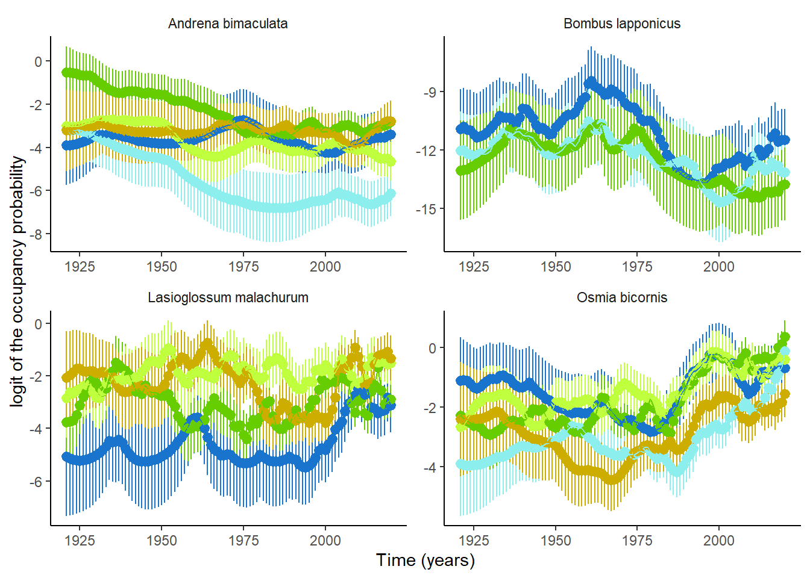
To look at temporal variation at regional level, we computed the inverse-variance weighted average of the occupancy probability over time, which is an index often used in meta-analyses to account for the uncertainty of each values composing the mean (Harrison 2011). We notice an average historical decline in all biogeographic regions but stronger in Continental and Atlantic regions (Figure 8). However, we also observed a very recent increase in occupancy probability across species over the last years 2015-2020, which might be due to the increase in the number of records over last decades presented before (Figure 3).
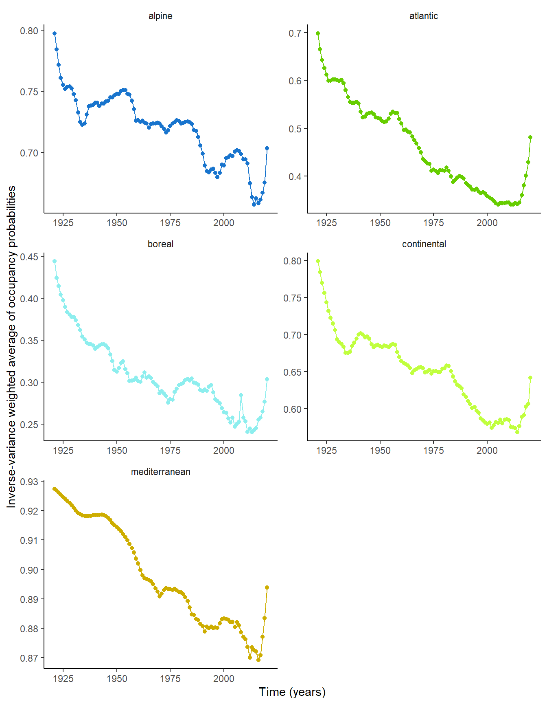
We can use this model to retrieve linear temporal trends on some specific periods, accounting for the uncertainty due to non-linearity, to compare results with previous ones. When looking at average occupancy trends per biogeographic regions and per periods, we observe that consistently with what we have seen in Figure 8. Recent periods exhibit strongly positive trends, questioning the ability of our models to account for the recent increase in sampling pressure.
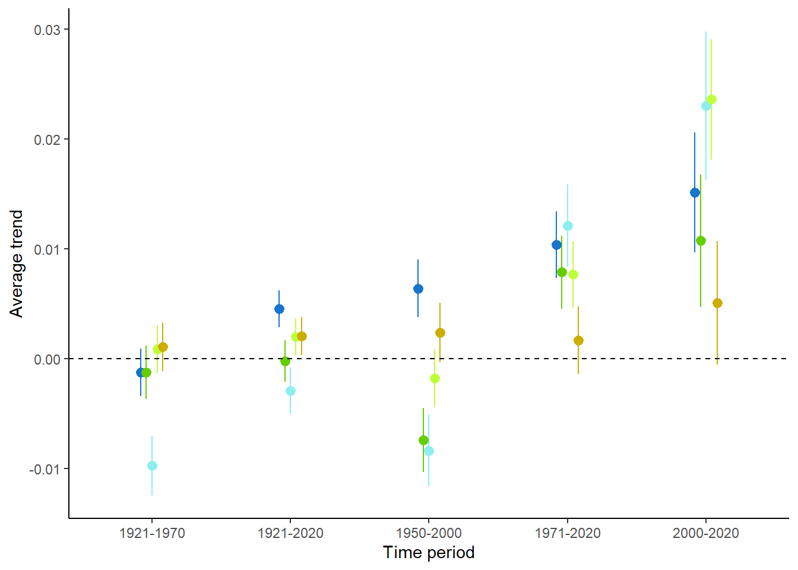
4 Adapting the observation model
The previous Section 3 have highlighted to account for an exponentially growing sampling pressure over time when estimating occupancy trends. In this part we tried to improve the Observation model (Equation 2) to better account for variation in sampling pressure.
4.1 Updating the model
In the version we used of the observation model, detection probability of each species was function of the completeness of the sampling, measured by the length of the species list detected during that survey, and a random effect of the year to absorb residual temporal variation. This composition of the observation model was inspired by previous work (Isaac et al. 2014).
However, this unique quantitative index (i.e. sampling completeness) is likely not enough to described the temporal changes in the way data have been collected over the period. Historical data (before 2000), are mostly from museum collections and have been collected by expert entomologists, that might have focused more on rare species. In contrast, modern data (after 2000) are more likely to come from more naive entomologists or researchers, often recording common species, easy to find and to identify. Thus, data collection is likely to have shifted from parsimonious collection with a preference for rare species, to a massive amounts of records focused on few common species. To better describe this temporal changes, in addition to sampling completness we also add an effect of the number of records to our observation model. We also removed the year random effect to avoid over-parametrization of our model. This led to the following final model:
State model:
\[ z_{rij} \sim Bernouilli(\Psi_{rij}); logit(\Psi_{rij})=\beta_0 + \tau_r \times year_j + \Theta_i \tag{5}\]
Observation model:
\[ \begin{align} y_{rijv} | z_{rij} &\sim Bernouilli(p_{rijv} \times z_{rij}); \\ logit(p_{rijv}) &=\beta_1 + \beta_2 \times sampling \space completeness_{ijv}+ \color{red}{\beta_3 \times log(nb \space records)} + \Theta_{r,month_v} \end{align} \tag{6}\]
As described in Section 2.2, we can implement a linear or non-linear version of this model and solve it.
4.2 Significant changes with previous trends
This new version of the model allowed us to estimate occupancy trends for 838 species, instead of 478 species previously.
The new occupancy trends revealed a clear majority of declining species (losers) relative to winners (Table 3), which was not the case before (Table 2).
| Region | Proportion of losers | Proportion of winners |
|---|---|---|
| alpine | 0.18 | 0.26 |
| atlantic | 0.47 | 0.26 |
| boreal | 0.41 | 0.25 |
| continental | 0.29 | 0.22 |
| mediterranean | 0.26 | 0.17 |
The changes of results between the two models are also clearly visible when looking at the distribution of the occupancy trends: most of the significant trends are now negatives (Figure 10). However, note that we still observe the right-skewed distribution typical of colonization of new regions by low-abundant species.
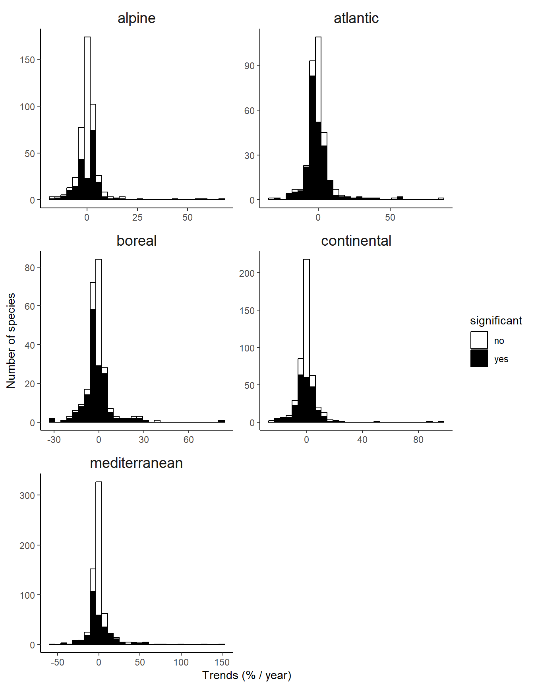
Similarly, average trends per regions also shifted towards more negative values (Figure 11).
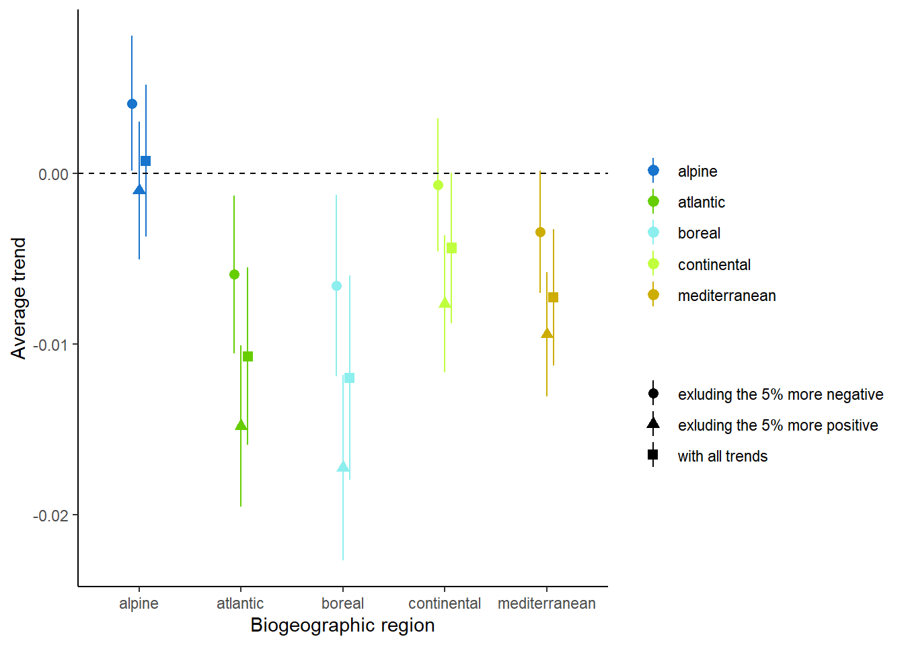
When looking at the temporal variation of the inverse-variance weighted average of the occupancy probability varies, we notice that the recent increased in the occupancy probability have been partially buffered by the inclusion of the number of records in the observation model (Figure 12).
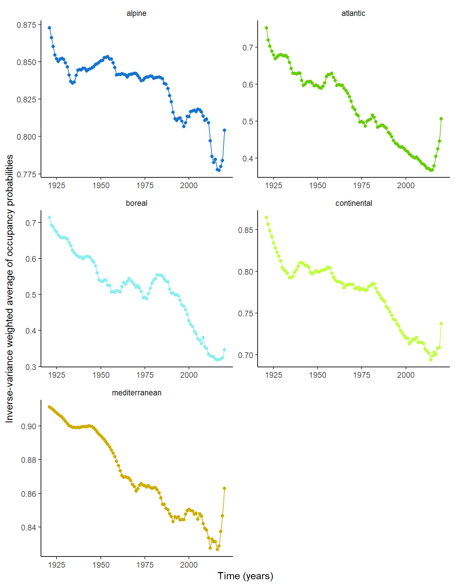
When using these non-linear variations in occupancy to focus on temporal trends per periods, we still observe that more recent trends tended to be more positive, excepting for mediterranean region. However, the most recent period does not exhibit any significant increase in occupancy anymore for the atlantic region (Figure 13).
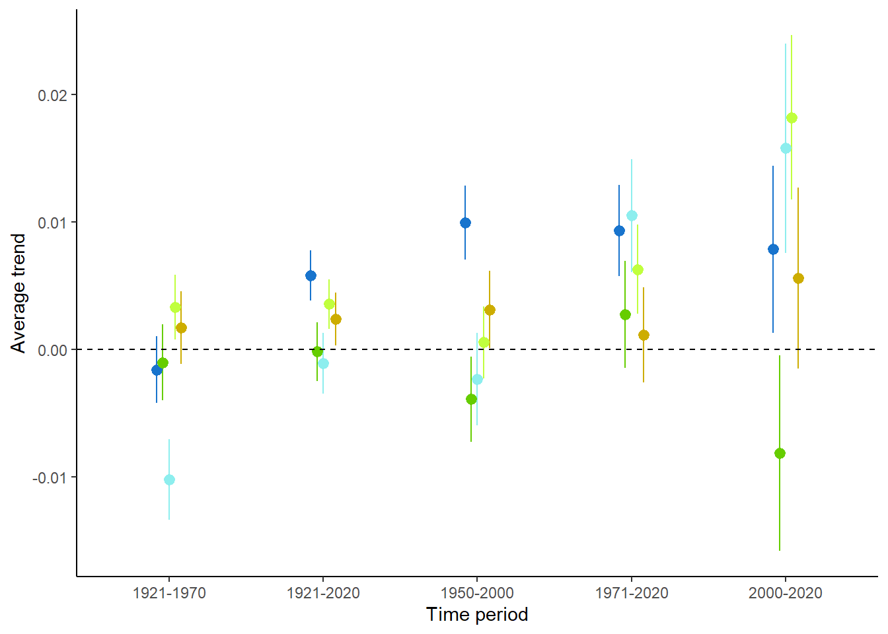
5 References
Duchenne, François, Emmanuelle Porcher, Jean-Baptiste Mihoub, Grégoire Loïs, and Colin Fontaine. 2022. “Controversy over the Decline of Arthropods: A Matter of Temporal Baseline?” Peer Community Journal 2. https://doi.org/10.24072/pcjournal.131.
Duchenne, François, Elisa Thébault, Denis Michez, Maxence Gérard, Céline Devaux, Pierre Rasmont, Nicolas J. Vereecken, and Colin Fontaine. 2020. “Long-Term Effects of Global Change on Occupancy and Flight Period of Wild Bees in Belgium.” Global Change Biology 26 (12): 6753–66. https://doi.org/https://doi.org/10.1111/gcb.15379.
Harrison, Freya. 2011. “Getting Started with Meta-Analysis.” Methods in Ecology and Evolution 2 (1): 1–10. https://doi.org/https://doi.org/10.1111/j.2041-210X.2010.00056.x.
He, Fangliang, and Kevin J. Gaston. 2003. “Occupancy, Spatial Variance, and the Abundance of Species.” The American Naturalist 162 (3): 366–75. https://doi.org/10.1086/377190.
Isaac, Nick JB, Arco J. van Strien, Tom A. August, Marnix P. de Zeeuw, and David B. Roy. 2014. “Statistics for Citizen Science: Extracting Signals of Change from Noisy Ecological Data.” Methods in Ecology and Evolution 5 (10): 10521060.
Outhwaite, Charlotte L., Gary D. Powney, Tom A. August, Richard E. Chandler, Stephanie Rorke, Oliver L. Pescott, Martin Harvey, et al. 2019. “Annual Estimates of Occupancy for Bryophytes, Lichens and Invertebrates in the UK, 1970–2015.” Scientific Data 6 (1): 259. https://doi.org/10.1038/s41597-019-0269-1.
Powney, Gary D., Claire Carvell, Mike Edwards, Roger K. A. Morris, Helen E. Roy, Ben A. Woodcock, and Nick J. B. Isaac. 2019. “Widespread Losses of Pollinating Insects in Britain.” Nature Communications 10 (1): 1018. https://doi.org/10.1038/s41467-019-08974-9.
Pradervand, Jean-Nicolas, Loïc Pellissier, Christophe F. Randin, and Antoine Guisan. 2014. “Functional Homogenization of Bumblebee Communities in Alpine Landscapes Under Projected Climate Change.” Climate Change Responses 1 (1): 1. https://doi.org/10.1186/s40665-014-0001-5.
Shirey, Vaughn, Rassim Khelifa, Leithen K. M’Gonigle, and Laura Melissa Guzman. 2023. “Occupancy–Detection Models with Museum Specimen Data: Promise and Pitfalls.” Methods in Ecology and Evolution 14 (2): 402–14. https://doi.org/10.1111/2041-210X.13896.